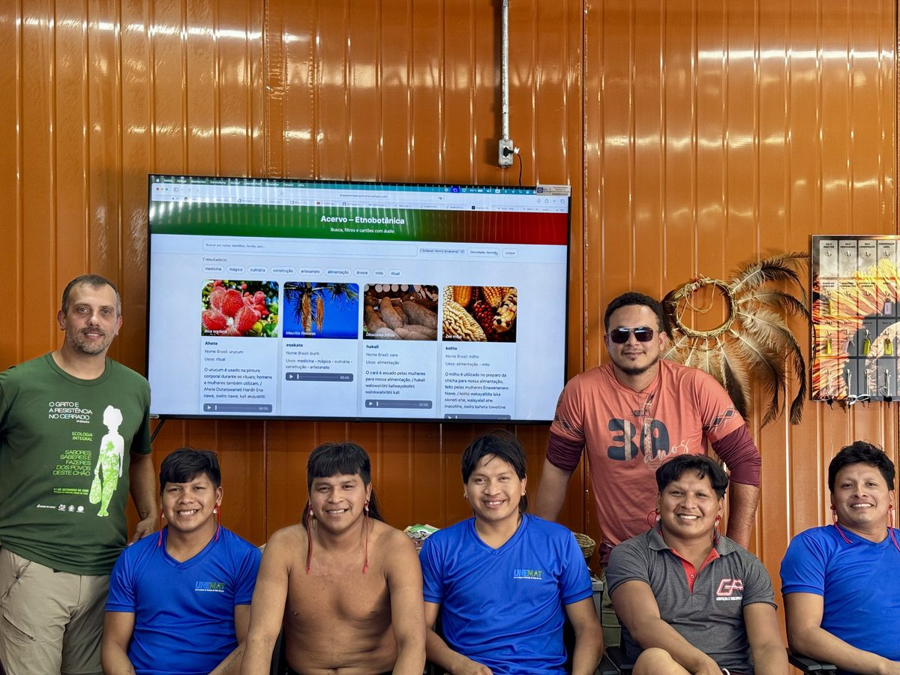
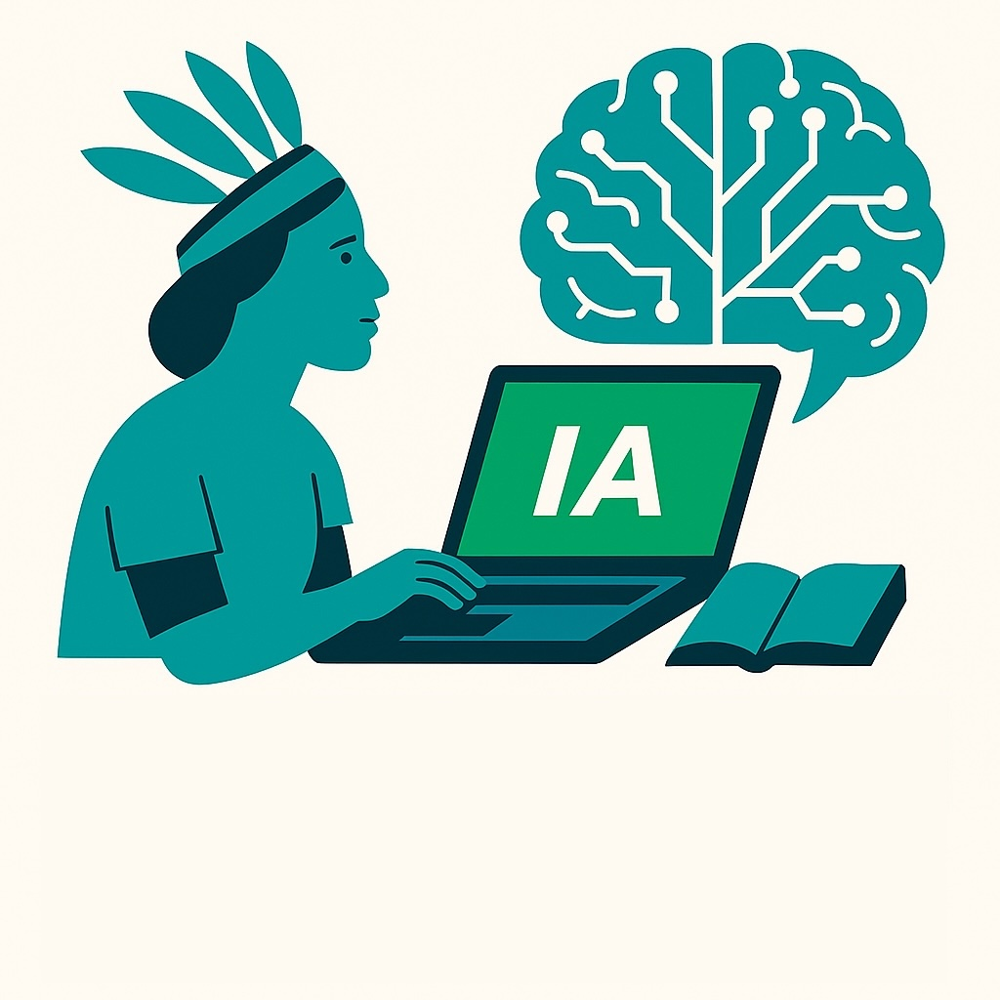
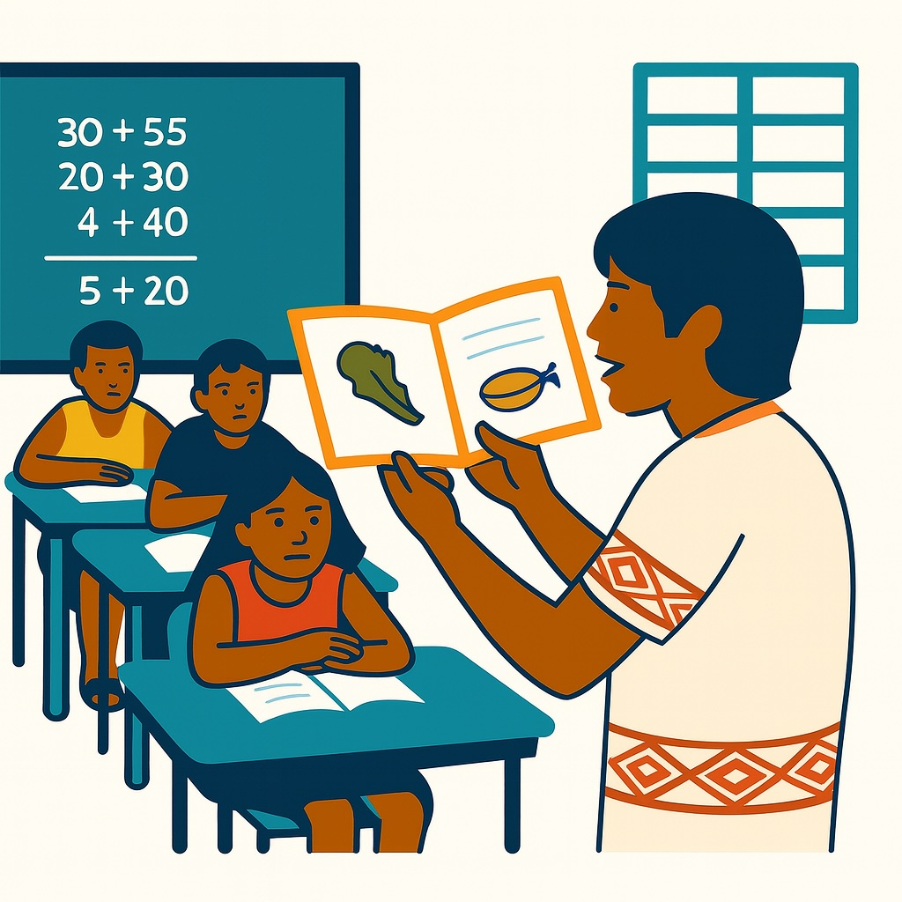
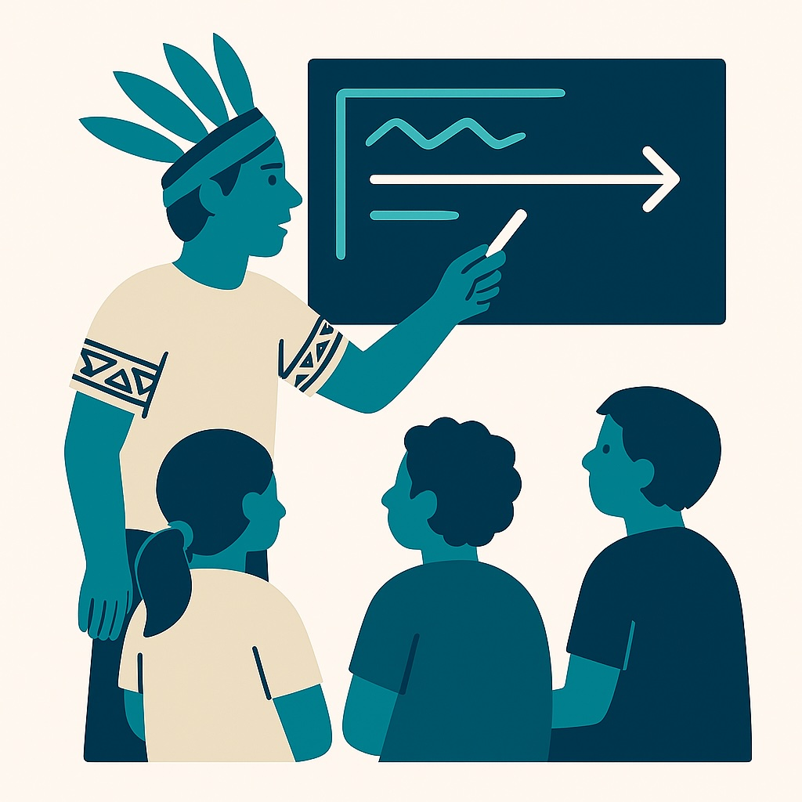
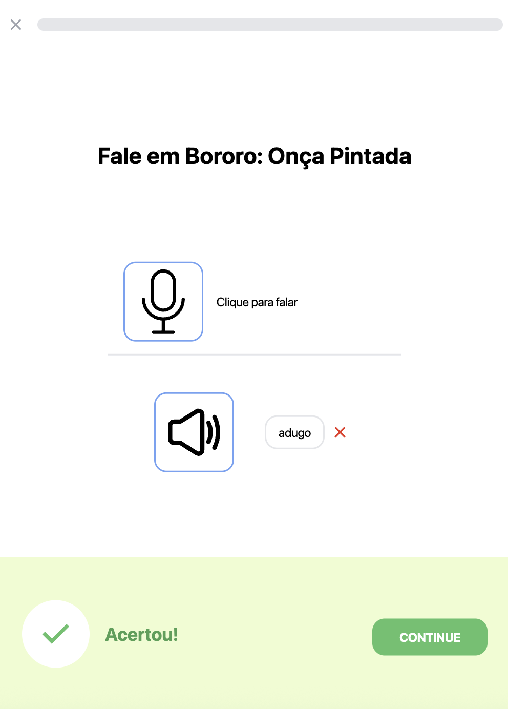
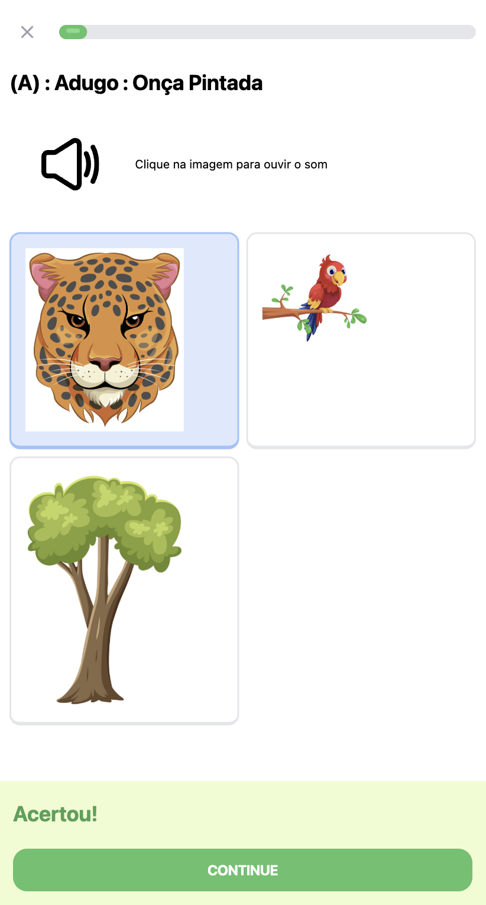

Plataforma de Lenguas Indígenas
Lenguas vivas, culturas fortalecidas. Revitalizamos y documentamos lenguas indígenas brasileñas a través de tecnología, educación y gobernanza comunitaria.

Explorar las plataformas · Conviértete en socio
¿Por qué actuar ahora?
De las más de 270 lenguas indígenas habladas en Brasil, muchas enfrentan riesgo de extinción. Cada lengua perdida es un universo de conocimiento que desaparece.
Lenguas en riesgo. Más del 40% de las lenguas indígenas brasileñas están amenazadas con extinción en las próximas décadas.
Materiales escasos. La mayoría de las lenguas carecen de materiales didácticos adecuados para usar en escuelas indígenas.
Transmisión amenazada. Los jóvenes indígenas a menudo pierden contacto con sus lenguas ancestrales durante la educación formal.
Cómo trabajamos
Un proceso colaborativo que pone a las comunidades en el centro de cada decisión.

Acuerdos de CLPI garantizan que las comunidades controlan todo el proceso y sus datos.
Documentación lingüística colaborativa con hablantes, ancianos y educadores locales.
Diccionarios, corpus lingüísticos y herramientas de aprendizaje accesibles en línea.
Modelos de lenguaje entrenados localmente para ayudar en la generación de contenido.
Libros, cartillas y recursos impresos para uso en aula.
Capacitación continua para educadores indígenas para usar los recursos.


Ética y respeto
Nuestro trabajo está guiado por principios rigurosos de consentimiento y protección de conocimientos tradicionales.
- CLPI/FPIC. Consentimiento Libre, Previo e Informado en todos los proyectos.
- Derechos de datos. Cada comunidad define sus propias reglas de acceso.
- Protección sensible. Contenidos sagrados protegidos por estándares antropológicos.
- DOI y citación. Todos los recursos reciben identificadores digitales permanentes.
Escuela Enawenê-Nawê
La asociación con la Escuela Estatal Indígena Enawenê-Nawê resultó en la creación de materiales didácticos bilingües utilizados diariamente por profesores y alumnos, fortaleciendo la transmisión de la lengua a las nuevas generaciones.
"Los materiales transformaron nuestra forma de enseñar. Ahora nuestros alumnos pueden aprender en su propia lengua."
— Michel Correa, Director Escolar
Explora las lenguas
Diccionarios, corpus lingüísticos y materiales educativos para cada comunidad asociada.

- Bororo (Boe Eno Moto) (activo): diccionario completo; corpus (UD + paralelo); etnobotánica y fauna; materiales escolares.
- Enawenê-Nawê (activo): diccionario; fauna y flora; corpus.
- Xavante (próximamente): diccionario; fauna.
Aplicación de aprendizaje de lenguas
Juegos interactivos, ejercicios de habla con IA y actividades de traducción para aprender lenguas indígenas. Ver la aplicación Bilingo.




Quién nos apoya


¿Interesado en convertirte en socio? Ponte en contacto.